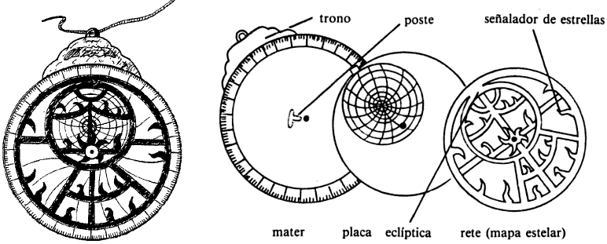
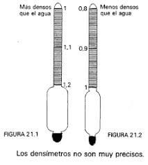

Fue la primera mujer matemática
Nació alrededor del año 370 A.C. y estudío en la Gran biblioteca de Alejandría.Era muy infrecuente que una mujer sse dedicase a la ciencia, sin embargo, no estaba prohibido e Hypatia siempre recibió el apoyo de su padre, el director de la biblioteca.
Realizó estudios en los campos de la matemática, la astronomía y el álgebra. Y es considerado por ello la primera mujer científica.
Tuvo una trágica muerte a manos de unos fánaticos cristianos que no apoyaban el culto pagano que profesaba Hypatia. Fue asaltada en su propia casa y asesianada cruelmente.
Realizo grandes aportaciones a través de sus invenciones:
Mejora el astrolabio que permitía mejores calculos para un modelo esférico del planeta
Creó el Densímetro, el cual permite calcular la densidad de los líquidos
Transcribió multiple obras como:
He elegido a Hypaitia porque siempre ha sido una figura muy importante de la que hemos hablado desde pequeños. A mi personalmente me gusta mucho porque se dedicó al campo de las matemáticas, al cual yo también me quiero dedicar. Es un ejemplo de perseverancia y esfuerzo.
Inicio